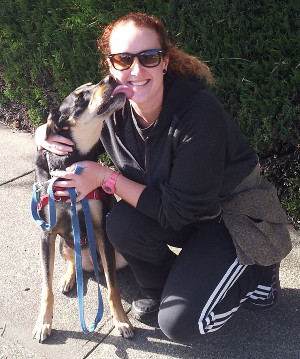

We're located at the corner of San Pablo and Pardee in West Berkeley, convenient locally and a few short blocks away from the Ashby and University exits of the I80/580.
Our building has been completely remodelled with a design focused on providing the highest quality dog daycare and boarding services in the Bay Area, a job that included updating the plumbing and electricity, adding floor drains, and installing modern heating and ventilation systems.
Take a virtual tour!
Interested in signing your dog up for daycare or boarding? It's as simple as 1-2-3:
Our aim is to make the experience for all our dogs the best it can possibly be, so we limit the number of dogs in each of our full-supervised play areas. And for you, we have an easy-to-use customer registration and scheduling module, so you can plan your daycare or boarding stay with us without hassle or worry.
A highlight of The Barkeley is our four indoor play yards. Our main yards sit under large skylights that soak the building in warm sunlight throughout the day. Complementing our main yards are smaller adjacent yards for senior dogs, puppies or dogs who do best in smaller play groups.
The Barkeley is staffed 24 hours a day, 7 days a week by our professional and caring staff. In addition to around-the-clock care, our overnight guests will enjoy clean and comfortable sleeping accommodations that come with a soft bed, clean blankets and access to fresh water at all times. Our boarding area is climate controlled so guests are always comfortable. At bedtime we provide a calming spa-like atmosphere with aromatherapy and soft soothing music to send our canine guests gently to sleep.
We believe that a key to happiness is being a lifelong learner. Same goes for dogs. If you're interested in training for your pup, we can arrange training sessions for your dog during their stay at The Barkeley. Contact us to learn more.
We have a brand new dog wash station at The Barkeley and we offer basic washing, brush and nail clipping as a service. Contact us to learn more about scheduling a spa session with one of our affiliated fully-equipped local groomers while your dog is in our care.
The Barkeley's team of dog care professionals will provide a safe and fully supervised environment. Our team members are trained on dog body language and behavior. We’ll shower your pup with individual attention and affection, and help them reach their full potential at any age.